18 Introducción a la evolución darwiniana
391 391 391
Charles Darwin. Este retrato fue pintado poco después de que Darwin regresara a Inglaterra de su viaje alrededor del mundo.
CONCEPTOS CLAVE
18.1 La evolución es la acumulación de cambios heredados dentro de las poblaciones a lo largo del tiempo. 18.2 Las ideas acerca de la evolución se originaron mucho antes de la época de Darwin. 18.3 La teoría científi ca de la evolución propuesta por Darwin, la selección natural, explicaba cómo fuerzas naturales en el ambiente podían causar la evolución. La selección natural ocurre porque los individuos con caracteres que los hacen mejor adaptados a las condiciones locales tienen más probabilidad de sobrevivir y producir descendencia que los individuos que no están bien adaptados. La síntesis moderna combina la teoría de Darwin con la genética. 18.4 La evidencia de que la evolución tuvo lugar y todavía ocurre es abrumadora. Esta evidencia incluye fósiles, biogeografía, anatomía comparada, biología molecular, biología del desarrollo y experimentos evolutivos con organismos vivos.
G
ran cantidad de evidencia sugiere que la diversidad biológica, representada por los millones de especies vivas actualmente en el planeta, evolucionó a partir de un solo ancestro durante la larga historia de la Tierra. Por tanto, organismos radicalmente diferentes entre sí de hecho tienen un parentesco distante, vinculado a través de numerosos ancestros intermediarios con un solo ancestro común. El naturalista británico Charles Darwin (1809-1882) desarrolló un mecanismo simple, verifi cable científi camente, para explicar la relación entre la diversidad de organismos de la Tierra. Darwin argumentó de modo convincente que todas las especies que existen en la actualidad, así como las incontables especies extintas que existieron en el pasado, surgieron a partir de otras más antiguas mediante un proceso de divergencia (división en rutas evolutivas separadas) gradual o evolución. El concepto de evolución es la piedra angular de la biología porque vincula todos los campos de las ciencias de la vida en un cuerpo de conocimiento unifi cado. Como lo dijo el genetista estadounidense Theodosius Dobzhansky: “Nada en la biología tiene sentido, excepto a la luz de la evolución”. 1 Los biólogos buscan comprender tanto la notable variedad como las semejanzas fundamentales de los organismos dentro del contexto de la
Science Source/Photo Researchers, Inc.
1 American Biology Teacher, vol. 35, núm. 125 (1973).
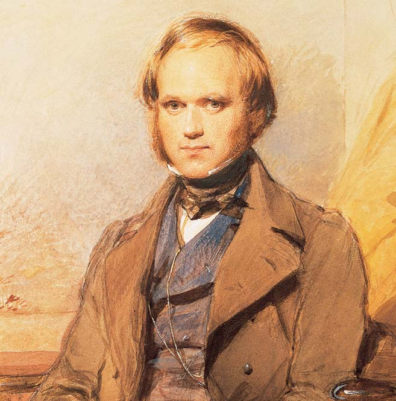
392 Capítulo 18
evolución. La ciencia de la evolución permite a los biólogos comparar hilos comunes entre organismos aparentemente tan diferentes como bacterias, ballenas, margaritas, mohos acuáticos y tenias. El comportamiento animal, la biología del desarrollo, la genética, la ecología evolutiva, la sistemática y la evolución molecular son ejemplos de algunas de las disciplinas biológicas que se fundamentan en la evolución. En este capítulo se estudia a Charles Darwin y el desarrollo de su teoría de la evolución mediante selección natural. También presenta evidencia que apoya la evolución, incluidos fósiles, biogeografía, anatomía comparativa, biología molecular, biología del desarrollo y estudios experimentales de cambio evolutivo en marcha, tanto en el laboratorio como en la naturaleza.
18.1 ¿QUÉ ES EVOLUCIÓN?
OBJETIVO DE APRENDIZAJE
1 Defi nir evolución .
Al comenzar el estudio de la evolución, la evolución se defi ne como la acumulación de cambios genéticos dentro de las poblaciones a lo largo del tiempo. Una población es un grupo de individuos de una especie que vive en la misma área geográfi ca al mismo tiempo. Así como la defi nición de gen cambia conforme se estudia genética, descubrirá que la defi nición de evolución se volverá más precisa en capítulos posteriores. El término evolución no se refi ere a los cambios que ocurren en un individuo durante su vida. En vez de ello, se refi ere a los cambios en las características de las poblaciones a lo largo de varias generaciones. Dichos cambios pueden ser tan pequeños que son difíciles de detectar o tan grandes que la población difi ere notablemente de su población ancestral. Con el tiempo, dos poblaciones pueden divergir a tal grado que uno se refi ere a ellas como especies diferentes. El concepto de especie se desarrolla ampliamente en el capítulo 20. Por el momento, una defi nición operativa simple es que una especie es un grupo de organismos, con estructura, función y comportamiento similares, que son capaces de cruzarse naturalmente entre sí y producir progenie fértil. La evolución tiene dos perspectivas principales: los cambios evolutivos menores de las poblaciones observados por lo general a través de algunas generaciones ( microevolución , que se estudia en el capítulo 19) y los grandes eventos evolutivos generalmente observados a través de períodos largos, como la formación de diferentes especies a partir de ancestros comunes ( macroevolución , que se estudia en el capítulo 20). La evolución tiene importantes aplicaciones prácticas. La agricultura debe lidiar con la evolución de la resistencia a los pesticidas en insectos y otras plagas. Del mismo modo, la medicina debe responder al rápido potencial evolutivo de los organismos patógenos, como bacterias y virus ( FIGURA 18-1 ). (En insectos, bacterias y otros organismos con vidas cortas, ocurren cambios evolutivos signifi cativos en períodos muy cortos.) Los médicos investigadores usan principios evolutivos para predecir cuáles cepas de infl uenza evolucionan más rápidamente, información que los científi cos necesitan para fabricar las vacunas contra la infl uenza para el próximo año. Además, los investigadores que desarrollan estrategias de tratamiento efectivo para el virus de inmunodefi ciencia humana (VIH) deben entender su evolución, tanto entre los huéspedes como dentro de ellos. El manejo para la conservación de especies raras y en peligro de extinción hace uso de los principios evolutivos de la genética de poblaciones. La rápida evolución de las bacterias y hongos en los suelos contaminados se utiliza en el campo de la biorremediación , en la que se
emplean microorganismos para limpiar sitios con desechos peligrosos. La evolución incluso tiene aplicaciones más allá de la biología. Por ejemplo, ciertas aplicaciones de computadora usan algoritmos que imitan la selección natural en los sistemas biológicos.
Repaso
■ ¿Qué es evolución?
■ ¿Los individuos evolucionan? Explique su respuesta.
18.2 IDEAS PREDARWINIANAS ACERCA DE LA EVOLUCIÓN
OBJETIVO DE APRENDIZAJE
2 Discutir el desarrollo histórico de la teoría evolutiva.
Aunque universalmente se asocia a Darwin con la evolución, las ideas de la evolución antecedieron a Darwin durante siglos. Aristóteles (384-322 a.C.) observó mucha evidencia de afi nidades naturales entre los organismos. Esto lo condujo a ordenar a todos los organismos que conocía en una “escala de la naturaleza” que se extendía desde lo excesivamente simple hasta lo más complejo. Aristóteles consideró a los organismos como seres imperfectos “que se movían hacia un estado más perfecto”. Algunos historiadores de la ciencia han interpretado esta idea como la precursora de la teoría evolutiva, pero Aristóteles fue impreciso acerca de la naturaleza de este “movimiento hacia la perfección” y ciertamente no propuso qué procesos naturales impulsaran el mecanismo de la evolución. Más aún, la moderna teoría evolutiva reconoce ahora que la evolución no se mueve hacia estados más “perfectos” o incluso necesariamente hacia mayor complejidad. Mucho antes de la época de Darwin se habían descubierto fósiles incrustados en rocas. Algunos de ellos correspondían a partes de especies
Resistencia porcentual
0
5
10
15
20
25
1990 1992 1994 1996 1998 2000 Año 2002 2004 2006 2007
FIGURA 18-1 Evolución de resistencia a la ciprofl oxacina en E. coli Estos datos muestran una creciente resistencia para E. coli en pacientes con infecciones sanguíneas y cerebroespinales en Inglaterra, Gales e Irlanda del Norte, de 1990 a 2007. (Fuente: Livermore, D., “Zietgeist of Resistance”, The Journal of Antimicrobial Chemotherapy, vol. 60, i59-i61, 2007. Con permiso de Oxford University Press.)
Introducción a la evolución darwiniana 393
18.3 DARWIN Y LA EVOLUCIÓN
OBJETIVOS DE APRENDIZAJE
3 Explicar las cuatro premisas de la evolución mediante selección natural propuestas por Charles Darwin. 4 Comparar la síntesis moderna con la teoría evolutiva original de Darwin.
Cuando tenía 15 años de edad, Darwin, hijo de un médico destacado, fue enviado a estudiar medicina a la Universidad de Edimburgo. Al darse cuenta de que la medicina no era lo suyo, pidió su cambio a la Universidad de Cambridge para estudiar teología. Durante esa época se convirtió en el protegido del reverendo John Henslow, quien era profesor de botánica. Henslow alentó el interés de Darwin por el mundo natural. Poco después de su graduación, Darwin se embarcó en el HMS Beagle , que realizaría un viaje de exploración de cinco años alrededor del mundo con el fi n de elaborar cartas de navegación para la marina británica. El Beagle partió de Plymouth, Inglaterra, en 1831 y navegó a lo largo de las costas oriental y occidental de América del Sur ( FIGURA 18-2 ). Mientras otros miembros de la tripulación elaboraban los mapas de las costas y puertos, Darwin pasaba muchas semanas en tierra estudiando los animales, plantas, fósiles y formaciones geológicas tanto de las regiones costeras como de tierra adentro, áreas que no se habían explorado ampliamente. Recolectó y catalogó miles de especímenes de plantas y animales, y tomó notas de sus observaciones, información que se volvió esencial en el desarrollo de su teoría. El Beagle pasó casi dos meses en las islas Galápagos, a 965 km al oeste de Ecuador, donde Darwin continuó con sus observaciones y recolecciones. Comparó los animales y plantas de las Galápagos con los de tierra fi rme en América del Sur. Estaba particularmente sorprendido por sus semejanzas y se preguntó por qué los organismos de las Galápagos se parecían más a los de América del Sur que a los de otras islas en diferentes partes del mundo. Más aún, aunque había semejanzas entre las especies de las Galápagos y las sudamericanas, también había diferencias. Incluso existieron diferencias reconocibles entre los reptiles y aves de una isla y otra. Darwin se preguntó por qué dichas islas remotas tendrían
familiares, pero otras eran extrañamente diferentes a cualquier especie conocida. Con frecuencia, los fósiles se encontraban en contextos inesperados; por ejemplo, en ocasiones se encontraban invertebrados marinos (animales marinos sin espina dorsal) en rocas en lo alto de las montañas. Leonardo da Vinci (1452-1519) estuvo entre los primeros en interpretar correctamente estos hallazgos inusuales como restos de animales que existieron en épocas anteriores pero que ahora estaban extintos. El naturalista francés Jean Baptiste de Lamarck (1744-1829) fue el primer científi co en proponer que los organismos experimentan cambios en el transcurso del tiempo como resultado de algún fenómeno natural más que de intervención divina. De acuerdo con Lamarck, un ambiente cambiante hacía que un organismo alterara su comportamiento, y en consecuencia usara más algunos órganos o partes corporales y otros los usara menos. A través de varias generaciones, un órgano o parte corporal dado aumentaría de tamaño si se usara mucho, o se reduciría y posiblemente desaparecería si se usaba menos. Su hipótesis requería que los organismos transmitieran a sus descendientes caracteres adquiridos durante sus vidas. Por ejemplo, Lamarck sugirió que el largo cuello de la jirafa se desarrolló cuando un ancestro de cuello corto estiró su cuello para ramonear en las hojas de los árboles. Sus descendientes heredaban el cuello más largo, que se estiraba aún más conforme se alimentaban. Este proceso, repetido durante muchas generaciones, resultó en los largos cuellos de las jirafas modernas. Lamarck también pensó que todos los organismos estaban dotados con una fuerza vital que los impulsaba a cambiar hacia mayor complejidad y “perfección” a lo largo del tiempo. El mecanismo de evolución propuesto por Lamarck es muy diferente del mecanismo posterior propuesto por Darwin. Sin embargo, la hipótesis de Lamarck permaneció como una explicación razonable de la evolución hasta que se redescubrieron las bases de la herencia de Mendel a principios del siglo xx. En aquella época, las ideas de Lamarck estaban muy desacreditadas.
Repaso
■ ¿Por qué se vincula a Aristóteles con el pensamiento evolutivo temprano?
■ ¿Cuáles fueron las ideas de Jean Baptiste de Lamarck acerca de la evolución?
Mauricio
Is. Canarias
Montevideo
Is. Falkland (Malvinas) Tierra del Fuego
Callao
Nueva Zelanda
Hobart
Sydney
Is. Cocos
Ecuador
King George Sound
Tahití
Is. Galápagos
Valparaíso Río de Janeiro
Bahía
Azores
Is. Cabo Verde
Is. Santa Helena
Is. Ascensión
FIGURA 18-2 Animada El viaje del HMS Beagle El viaje de cinco años comenzó en Plymouth, Inglaterra ( estrella ), en 1831. Las observaciones realizadas en las Islas Galápagos ( diana ), en la costa occidental de América del Sur, ayudaron a Darwin a desarrollar un mecanismo satisfactorio para explicar cómo una población de organismos podía cambiar con el transcurso del tiempo.
394 Capítulo 18
explicación de Darwin de la evolución. Los años que Darwin observó los hábitos de animales y plantas lo introdujeron a la lucha por la existencia descrita por Malthus. Darwin pensó que, en esta lucha, las variaciones heredades favorables para la supervivencia tenderían a conservarse, mientras que las desfavorables se eliminarían. El resultado sería la adaptación , una modifi cación evolutiva que mejora las posibilidades de supervivencia y éxito reproductivo en un ambiente dado. Con el tiempo, la acumulación de modifi caciones puede resultar en una nueva especie. Tiempo era lo único que se requería para el origen de nuevas especies y los geólogos de la época, incluyendo Lyell, proporcionaron evidencia de que la Tierra era lo sufi cientemente antigua como para brindar el tiempo adecuado. Darwin fi nalmente desarrolló una explicación científi ca operativa de la evolución, la de la selección natural , en la que los organismos mejor adaptados tenían más probabilidades de sobrevivir y convertirse en progenitores de la siguiente generación. Como resultado de la selección natural, la población cambia a lo largo del tiempo; la frecuencia de los caracteres favorables aumenta en generaciones sucesivas, mientras que los caracteres menos favorables se vuelven escasos o desaparecen. Darwin pasó los siguientes 20 años formulando sus argumentos para la selección natural y acumuló un inmenso cuerpo de evidencia para apoyar su teoría, y para concordar con otros científi cos. Mientras Darwin meditaba en sus ideas, Alfred Russel Wallace (1823-1913), naturalista británico que estudió las plantas y los animales del archipiélago malayo durante ocho años, fue igualmente sorprendido por la diversidad de especies y las peculiaridades de su distribución. Wallace escribió un breve ensayo acerca de este tema y se lo envió a Darwin, en ese entonces un biólogo de renombre mundial, para pedirle su opinión. Darwin reconoció su propia teoría y se dio cuenta de que Wallace había llegado de manera independiente a la misma conclusión: que la evolución ocurre mediante selección natural. Los colegas de Darwin lo persuadieron de presentar el manuscrito de Wallace junto
tal diversidad biológica. Después de regresar a casa, Darwin refl exionó acerca de tales observaciones e intentó desarrollar una explicación satisfactoria para la distribución de las especies entre las islas. Darwin trazó varias líneas de evidencia al considerar cómo pudieron originarse las especies. A pesar de la obra de Lamarck, la noción general a mediados del siglo xix era que la Tierra era demasiado joven para que los organismos hubieran cambiado de manera signifi cativa desde que aparecieron por primera vez. Sin embargo, durante los comienzos del siglo xix, los geólogos consideraron la idea de que en su origen las montañas, valles y otras características físicas de la superfi cie de la Tierra no tenían su forma actual. En vez de ello, tales características se desarrollaron lentamente durante largos períodos por los procesos geológicos de actividad volcánica, levantamiento, erosión y glaciación. En su viaje, Darwin llevó consigo el libro titulado Principios de geología , publicado en 1830 por el geólogo inglés Charles Lyell, el que estudió con cuidado. Lyell le proporcionó a Darwin un importante concepto: que el lento ritmo de los procesos geológicos, que todavía ocurren en la actualidad, indicaba que la Tierra era extremadamente antigua. Otra importante evidencia que infl uyó a Darwin fue el hecho de que los criadores y granjeros podían desarrollar muchas variedades de animales domesticados en pocas generaciones. Lo hacían al elegir ciertos caracteres y cruzar sólo a los individuos que mostraban los caracteres deseados, un procedimiento conocido como selección artifi cial . Los criadores, por ejemplo, produjeron numerosas variedades de perros mediante selección artifi cial (como sabuesos, dálmatas, airedales, border collies y pequineses). Muchas variedades de plantas también se produjeron mediante selección artifi cial. Por ejemplo: col, brócoli, coles de Bruselas, colifl or, acelgas, berzas y colorábamos son distintos cultivos cuyos miembros son todos parte de la misma especie, Brassica oleracea ( FIGURA 18-3 ). La cruza selectiva de col marítima, o col silvestre, una planta frondosa nativa de Europa y Asia, produjo los siete vegetales mencionados. Hace más de 4000 años, algunos granjeros seleccionaron artifi cialmente coles silvestres cuyas hojas estaban solapadas. Con el tiempo, dichas hojas se volvieron tan prominentes que las plantas, que parecían coles modernas, llegaron a reconocerse como separadas y distintas de su col silvestre ancestral. Otros granjeros seleccionaron diferentes características de la col silvestre, lo que produjo las otras modifi caciones. Por ejemplo, el colorábamos se produjo al seleccionar tallos de almacenamiento agrandados y las coles de Bruselas al seleccionar bulbos axilares agrandados. En consecuencia, los humanos son responsables de la evolución de B. oleracea en siete cultivos vegetales. Darwin estaba impresionado por los cambios inducidos mediante selección artifi cial y planteó la hipótesis de que un proceso selectivo similar ocurría en la naturaleza. Por tanto, Darwin usó la selección artifi cial como modelo cuando desarrolló el concepto de selección natural. Las ideas de Th omas Malthus (1766-1834), clérigo y economista inglés, fueron otra importante infl uencia para Darwin. En un Ensayo sobre el principio de población , publicado en 1798, Malthus afi rmó que el crecimiento poblacional no siempre es deseable, una visión contraria a las creencias de su época. Él observó que las poblaciones tienen la capacidad de aumentar en forma geométrica (1 ¡ 2 ¡ 4 ¡ 8 ¡ 16) y por ende superan el suministro de alimentos, que sólo tiene la capacidad de aumentar aritméticamente (1 ¡ 2 ¡ 3 ¡ 4 ¡ 5). En el caso de los humanos, Malthus sugirió que el confl icto entre crecimiento poblacional y suministro de alimentos genera hambrunas, enfermedades y guerras, que funcionan como frenos inevitables del crecimiento de la poblaci ó n. La idea de Malthus de que había una fuerte y constante restricción sobre el crecimiento poblacional humano infl uyó enormemente en la
FIGURA 18-3 Selección artifi cial en Brassica oleracea Un bulbo terminal agrandado (la “cabeza”) se seleccionó en la col ( inferior izquierda ), grupos de fl ores en el brócoli ( superior izquierda ) y la colifl or ( centro derecha ), bulbos axilares en las coles de Bruselas ( inferior centro ), las hojas en las acelgas ( superior derecha ) y las berzas ( inferior derecha ), y tallos en el colorábamos ( centro ).
John Amaldi
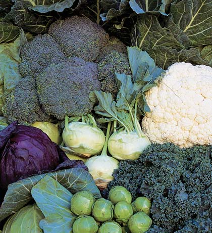
Introducción a la evolución darwiniana 395
cimiento y otros recursos disponibles para una población, de modo que los organismos compiten entre sí por dichos recursos limitados. Puesto que existen más individuos de los que el ambiente puede sostener, no todos sobreviven para reproducirse. Otros límites sobre el crecimiento poblacional incluyen depredadores, organismos patógenos y condiciones climatológicas desfavorables. 4. Éxito reproductivo diferencial . Aquellos individuos que tienen la combinación más favorable de características (las que hacen a los individuos mejor adaptados a su ambiente) tienen más probabilidad de sobrevivir y reproducirse. Los descendientes tienden a parecerse a sus progenitores porque la siguiente generación hereda caracteres con la base genética de los progenitores. La reproducción exitosa es la clave de la selección natural: los individuos mejor adaptados producen más descendientes, mientras que los individuos menos adaptados mueren de manera prematura o producen menos descendientes o de categoría inferior.
Con el tiempo pueden acumularse sufi cientes cambios en poblaciones geográfi camente separadas (por lo general con ambientes ligeramente diferentes) para producir nuevas especies. Darwin observó que los pinzones de las Galápagos parecían haber evolucionado de esta forma. Las 14 especies están estrechamente relacionadas. Todas descienden de un ancestro común, una sola especie que viajó desde la parte continental de América del Sur hace 2 a 3 millones de años. (Los parientes genéticos más cercanos de los pinzones de las Galápagos son pequeñas aves granívoras conocidas como tomeguines que viven en el occidente de Sudamérica). Durante este periodo de 2 a 3 millones de años, el número de islas aumentó, el clima cambió, la vida vegetal y el suministro de alimentos también variaron. Las diferentes islas de las Galápagos mantuvieron a los pinzones aislados entre sí, lo que en consecuencia les permitió divergir en especies separadas en respuesta a condiciones variables ( FIGURA 18-5 ). Peter Grant, Rosemary Grant y sus colegas documentan la selección natural en los pinzones de las Galápagos en su ambiente natural desde principios de la década de 1970. Como un ejemplo del proceso evolutivo en acción, considere al pinzón de tierra de pico fi loso ( Geospiza diffi cilis ). Esta especie vive en varias islas diferentes y cada población ha evolucionado diferentes formas y tamaños de pico dependiendo de la dieta disponible en la isla donde vive. En capítulos posteriores se estudiarán de nuevo los pinzones de las Galápagos. En el capítulo 19 se describe parte de la investigación a largo plazo que Peter Grant, Rosemary Grant y sus colegas realizaron acerca de la microevolución de los pinzones de las Galápagos cuando las sequías afectaron el suministro de alimentos; dichos estudios demuestran que el cambio ambiental puede impulsar la selección natural. En el capítulo 54 se describe el desplazamiento de características , un aspecto de la ecología evolutiva, en los pinzones de las Galápagos.
La síntesis moderna combina la teoría de Darwin con la genética
Una de las premisas sobre la cual Darwin basó su teoría científi ca de la evolución mediante selección natural es que los individuos transmiten caracteres a la siguiente generación. Sin embargo, Darwin no pudo explicar cómo ocurre esto o por qué los individuos varían dentro de una población. Según se estudió en el capítulo 11, Gregor Mendel dilucidó los patrones básicos de la herencia. Darwin, quien era contemporáneo con Mendel, aparentemente no estaba familiarizado con el trabajo de este último. De hecho, la comunidad científi ca no reconoció el trabajo de Mendel sino hasta la primera parte del siglo xx.
con un resumen de su propia obra que había preparado y había circulado entre algunos de sus amigos muchos años antes. Ambos ensayos se presentaron en julio de 1858 en una reunión en Londres de la Linnaean Society. La obra monumental de Darwin, El origen de las especies por selección natural o La preservación de las razas favorecidas en la lucha por la vida se publicó en 1859. En 1870 se publicó el libro de Wallace, Aportaciones a la teoría de la selección natural , ocho años después de que regresara del archipiélago malayo.
Darwin propuso que la evolución ocurría mediante selección natural
El mecanismo de evolución mediante selección natural propuesto por Darwin consiste de observaciones en cuatro aspectos del mundo natural: variación, sobreproducción, límites sobre el crecimiento poblacional o una lucha por la existencia, y éxito reproductivo diferencial.
- Variación . Los individuos en una población muestran variación ( FIGURA 18-4 ). Cada individuo tiene una combinación única de caracteres, como tamaño, color, capacidad para tolerar condiciones ambientales difíciles y resistencia a ciertos parásitos o infecciones. Algunos caracteres mejoran las posibilidades de supervivencia y éxito reproductivo de un individuo, mientras que otros no lo hacen. Recuerde que la variación necesaria para la evolución mediante selección natural debe heredarse. Aunque Darwin reconoció la importancia de la variación heredada para la evolución, no conocía el mecanismo de la herencia. 2. Sobreproducción . La capacidad reproductiva de cada especie tiene el potencial de hacer que su población aumente geométricamente con el tiempo. Una hembra de rana pone alrededor de 10,000 huevos, ¡y una hembra de bacalao pone tal vez 40 millones de huevos! Sin embargo, en cada caso, sólo sobreviven alrededor de dos descendientes para reproducirse. Por ende, en cada generación cada especie tiene la capacidad de producir más descendientes de los que pueden sobrevivir. 3. Límites sobre el crecimiento poblacional o una lucha por la existencia . Sólo existe cierta cantidad de alimento, agua, luz, espacio para cre-
FIGURA 18-4 Variación genética en boas arbóreas esmeralda Estas serpientes, todas de la misma especie ( Corallus caninus ), fueron capturadas en una pequeña sección de selva en la Guyana francesa. Muchas especies de serpiente muestran considerables variaciones en su coloración y patrones.
© Biosphoto/Sauvenet Jany/Peter Arnold, Inc.
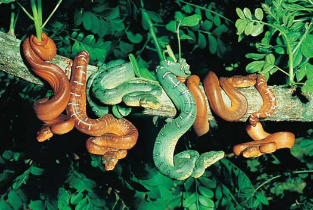
396 Capítulo 18
Ahora considere una de las muchas preguntas evolutivas que en la actualidad abordan los biólogos: los efectos relativos del azar y la selección natural sobre la evolución.
Los biólogos estudian el efecto del azar sobre la evolución
Los biólogos se preguntan si obtendrían los mismos resultados si pudieran repetir la evolución a partir de organismos similares expuestos a condiciones ambientales análogas. Esto es: ¿evolucionarían los mismos tipos de cambios como resultado de la selección natural? ¿O los organismos serían muy diferentes como resultado de eventos aleatorios? Muchos ejemplos recientemente reportados de evolución en acción sugieren que el azar puede no ser tan importante como la selección natural, al menos en lo que concierne a las poblaciones. Una especie de mosca de la fruta ( Drosophila subobscura ) nativa de Europa habita en áreas desde Dinamarca hasta España. Los biólogos observaron que las moscas del norte tienen alas más grandes que las del sur ( FIGURA 18-6 ). La misma especie de mosca se introdujo accidentalmente en América del Norte a fi nales de la década de 1970. Diez años después de su introducción, los biólogos determinaron que no habían ocurrido cambios estadísticamente signifi cativos en el tamaño de las alas en las diferentes regiones de América del Norte. Sin embargo, 20 años después de su introducción, las moscas de la fruta en América del Norte mostraban el mismo tipo de cambios de alas norte-sur que en Europa. (No se sabe por qué las alas más grandes evolucionaron en áreas del norte y las alas más pequeñas en los climas del sur). Un estudio de la evolución de peces conocidos como espinosos en tres lagos costeros del occidente de Canadá produjo resultados sorprendentemente similares al estudio de moscas de la fruta. La evidencia molecular indica que cuando los lagos se formaron hace miles de años, estaban poblados por la misma especie ancestral. (El análisis de ADN mitocondrial de espinosos en los tres lagos apoya la hipótesis de un ancestro común). En cada lago, las mismas dos especies evolucionaron a partir de un pez ancestral común. Una especie es grande y consume invertebrados que se encuentran en el fondo del lago, mientras que la otra es más pequeña y consume plancton en la superfi cie del lago.
A partir de las décadas de 1930 y 1940, los biólogos experimentaron un adelanto conceptual cuando combinaron los principios de la herencia mendeliana con la teoría de Darwin de la selección natural. El resultado fue una explicación unifi cada de la evolución conocida como síntesis moderna . En este contexto, síntesis se refi ere a combinar partes de varias teorías para formar un todo unifi cado. Algunos de los fundadores de la síntesis moderna fueron el genetista estadounidense Th eodosius Dobzhansky, el genetista y estadístico británico Ronald Fisher, el genetista británico J. B. S. Haldane, el biólogo británico Julian Huxley, el biólogo estadounidense Ernst Mayr, el paleontólogo estadounidense George Gaylord Simpson, el botánico estadounidense G. Ledyard Stebbins y el genetista estadounidense Sewell Wright. En la actualidad, la síntesis moderna incorpora el conocimiento en expansión de la genética, que por sí misma argumenta de manera irrefutable a favor de la evolución, la sistemática, la paleontología, la biología del desarrollo, el comportamiento y la ecología. La síntesis moderna explica la observación de Darwin de la variación entre la descendencia en términos de mutación , o cambios en el ADN, como en las sustituciones de nucleótidos. Las mutaciones brindan la variabilidad genética sobre la que actúa la selección natural durante la evolución. La síntesis moderna, que enfatiza la genética de poblaciones como el foco central de la evolución, se ha mantenido fi rme desde su planteamiento. Domina el pensamiento y la investigación de los biólogos que trabajan en muchas áreas y ha producido una enorme acumulación de nuevos descubrimientos que validan la evolución mediante selección natural. La mayoría de los biólogos no sólo aceptan los principios básicos de la síntesis moderna, sino que también intentan comprender mejor los procesos causales de la evolución. Por ejemplo, ¿cuál es el papel del azar en la evolución? ¿Con qué rapidez evolucionan nuevas especies? Estas y otras preguntas han surgido en parte a partir de una reevaluación del registro fósil y en parte a partir de nuevos descubrimientos acerca de los aspectos moleculares de la herencia. Tales análisis críticos son parte integral del proceso científi co porque estimulan la observación y la experimentación adicionales, junto con un nuevo examen de la evidencia previa. La ciencia es un proceso en marcha continua y la información que se obtenga en el futuro puede requerir modifi car ciertas partes de la síntesis moderna.
El pinzón carpintero ( Camarhynchus pallidus ) saca insectos de la corteza y oquedades usando espinas, varitas o incluso hojas muertas.
El pinzón cactus ( Geospiza scandens ), que se alimenta de las partes carnosas de los cactus, como son las flores, tiene un pico largo y puntiagudo.
El pinzón de tierra grande ( Geospiza magnirostris ) tiene un pico muy abultado, del tipo cascanueces, adaptado para comer gruesas semillas con cáscara dura.
El pinzón mosquitero ( Certhidia olivacea ) tiene un pico delgado para comer insectos.
© INTERFOTO/Alamy
© Images & Stories/Alamy
© Images & Stories/Alamy
Miguel Castro/Photo Researchers, Inc.
FIGURA 18-5 Animada Pinzones de las Galápagos Darwin infi rió que estas aves descendían de una población ancestral común de aves granívoras de América del Sur. La variación en sus picos es resultado de la adaptación a la disponibilidad de diferentes tipos de alimentos.
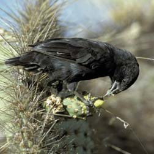
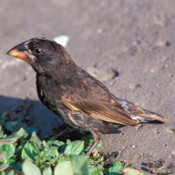
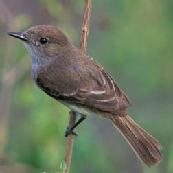
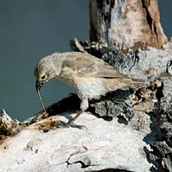
Introducción a la evolución darwiniana 397
7 Describir la evidencia de la evolución obtenida a partir de la anatomía comparada. 8 Explicar brevemente cómo la biología molecular y la biología del desarrollo brindan comprensión del proceso evolutivo. 9 Proporcionar un ejemplo de cómo se ponen a prueba experimentalmente las hipótesis evolutivas.
Un gran cuerpo de evidencia científi ca brinda apoyo a la evolución, incluidas las observaciones del registro fósil, la biogeografía, la anatomía comparada, la biología molecular y la biología del desarrollo. Además, las hipótesis evolutivas se ponen a prueba de manera experimental cada vez más. En conjunto, esta evidencia confi rma la teoría científi ca de que la vida se propagó sobre la Tierra por el proceso de la evolución.
El registro fósil proporciona fuerte evidencia de la evolución
Posiblemente la evidencia más directa de la evolución provenga del descubrimiento, identifi cación e interpretación de fósiles , que son los restos o trazas dejadas en roca sedimentaria por organismos que existieron anteriormente. (El término fósil proviene de la palabra latina fossilis , que signifi ca “algo desenterrado”). La roca sedimentaria se forma por la acumulación y solidifi cación de partículas (guijarros, arena, cieno o arcilla) producidas por la exposición a la intemperie de rocas más antiguas, como las rocas volcánicas. Las partículas de sedimento, que por lo general se depositan en los lechos de los ríos, el fondo de los lagos o el suelo marino, se acumulan con el paso del tiempo y exhiben capas distintivas ( FIGU -
RA 18-7 ). En una secuencia rocosa sin perturbaciones, la capa más antigua está en el fondo y las capas superiores son sucesivamente más jóvenes. El estudio de las capas de rocas sedimentarias, incluida su composición, orden y semejanza de una ubicación a otra, permite a los geólogos colocar en la secuencia correcta los eventos registrados en las rocas. El registro fósil muestra una progresión desde los organismos unicelulares más tempranos hasta los muchos organismos unicelulares y multicelulares que viven en la actualidad (vea la tabla 21-1). En consecuencia, el registro fósil demuestra que la vida evolucionó a lo largo del tiempo. Actualmente, los paleontólogos (científi cos que estudian la especies extintas) han descrito y nombrado alrededor de 300,000 especies fósiles, y otras todavía están por descubrirse. Aunque la mayoría de los fósiles se conservan en roca sedimentaria, algunos restos más recientes se han conservado excepcionalmente bien en pantanos, brea, ámbar (resina de árbol antigua) o hielo ( FIGURA 18-8 ). Por ejemplo, los restos de un mamut lanudo congelado en la profundidad del hielo siberiano durante más de 25,000 años estaban tan bien conservados que parte de su ADN pudo analizarse. Pocos organismos que mueren se convierten en fósiles. La formación y conservación de un fósil requiere que un organismo quede enterrado en condiciones que hagan más lento o eviten el proceso de degradación. Esto es más probable que ocurra si los restos de un organismo quedan cubiertos rápidamente por un sedimento de fi nas partículas de suelo suspendidas en agua. De esta forma los restos de los organismos acuáticos pueden quedar atrapados en pantanos, barro, bancos de arena o deltas. Los restos de organismos terrestres que vivieron en llanuras aluviales también pudieron cubrirse con sedimentos acuáticos o, si el organismo vivió en una región árida, por arena transportada por el viento. Con el tiempo, los sedimentos se endurecen para formar roca sedimentaria y los minerales suelen sustituir los restos del organismo de modo que se conservan muchos detalles de su estructura, incluso de tipo celular. El registro fósil no es una muestra aleatoria de la vida pasada, pues está sesgado hacia los organismos acuáticos y aquellos que vivieron en
Los miembros de las dos especies dentro de un solo lago no se cruzan entre sí, pero los individuos de las especies más grandes de un lago se cruzan en cautiverio con individuos de las especies más grandes de los otros lagos. De igual modo, los individuos más pequeños de un lago se cruzan en cautiverio con individuos más pequeños de los otros lagos. En estos ejemplos la selección natural parece ser un agente más importante de cambio evolutivo que el azar. Si el azar fuese el factor de infl uencia más importante en la dirección de la evolución, entonces la evolución de la mosca de la fruta no habría procedido de la misma forma en dos continentes y la evolución de los espinosos no habría procedido de la misma forma en los tres lagos. Sin embargo, sólo porque se tienen muchos ejemplos de la importancia de la selección natural en la evolución, no necesariamente se concluye que los eventos aleatorios deban ignorarse como un factor en la dirección del cambio evolutivo. Los defensores del papel del azar consideran que el cambio es más importante en la evolución de los grandes grupos taxonómicos (macroevolución) que en la de poblaciones (microevolución). También es posible que ocurran los eventos aleatorios, pero que sus efectos sobre la evolución sean más difíciles de demostrar que la selección natural.
Repaso
■ ¿Qué es selección natural?
■ ¿Por qué sólo las variaciones heredadas son importantes en el proceso evolutivo?
■ ¿Qué parte de la teoría no pudo explicar Darwin? ¿Cómo llena esta brecha la síntesis moderna?
18.4 EVIDENCIA DE LA EVOLUCIÓN
OBJETIVOS DE APRENDIZAJE
5 Resumir la evidencia de la evolución obtenida a partir del registro fósil. 6 Defi nir biogeografía y describir cómo la distribución de los organismos da apoyo a la evolución.
FIGURA 18-6 Tamaño de alas en hembras de moscas de la fruta En Europa, las hembras de las moscas de la fruta ( Drosophila subobscura ) de los países del norte tienen alas más grandes que las moscas de los países del sur. Aquí se muestran dos moscas: una de Dinamarca ( derecha ) y otra de España ( izquierda ). El mismo patrón evolutivo surgió en América del Norte después de la introducción accidental de D. subobscura en el continente.
George Gilchrist
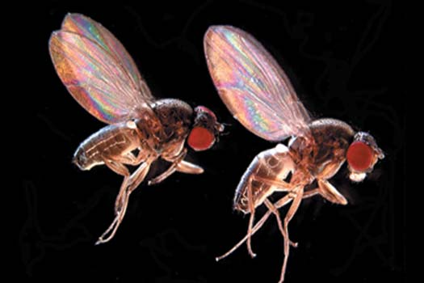
398 Capítulo 18
brindan evidencia directa del origen de nuevas especies a partir de otras ya existentes, incluidas muchas formas transicionales.
Fósiles transicionales documentan la evolución de las ballenas
Durante el siglo pasado, los biólogos descubrieron evidencia que sugiere que las ballenas y otros cetáceos (un orden de mamíferos marinos) evolucionaron a partir de mamíferos terrestres. Durante las décadas de 1980 y 1990, los paleontólogos descubrieron muchos intermediarios fósiles en la evolución de las ballenas que ayudaron a documentar la transición de la tierra al agua de las ballenas. Los fósiles de Ambulocetus natans , una forma transicional con 50 millones de años de antigüedad descubierta en Pakistán, tiene muchas características de las ballenas modernas, pero también posee extremidades posteriores y patas ( FIGURA 18-9a ). (Las ballenas modernas no tienen ex tre mi da des posteriores, aunque persisten huesos vestigiales de pelvis y extremidades posteriores. Las estructuras vestigiales se estudian más adelante en el capítulo). Las vértebras de la espalda baja del Ambulocetus eran muy fl exibles, lo que permitía que la espalda se moviera de manera dorsoventral (arriba y abajo) durante el nado y el buceo, como ocurre con las ballenas modernas. Esta antigua ballena podía nadar pero también moverse en tierra, acaso como lo hacen los leones marinos de la actualidad. El Rodhocetus es un fósil de ballena que se encontró en rocas más recientes en Pakistán ( FIGURA 18-9b ). Las vértebras del Rodhocetus eran incluso más fl exibles que las encontradas en el Ambulocetus . Las vértebras fl exibles permitieron al Rodhocetus un movimiento dorsoventral más poderoso durante el nado. Tal vez el Rodhocetus pudo ser totalmente acuático. Hace 40 millones de años la transición de la ballena de tierra al océano estaba casi completa. Los fósiles egipcios de Basilosaurus muestran una ballena con un cuerpo aerodinámico y aletas frontales para cambiar de dirección, como las de las ballenas de la época actual ( FIGURA 18-9c ). El Basilosaurus conservó vestigios de sus ancestros terrestres: un par de extremidades posteriores reducidas que se desarticularon de la espina dorsal y que probablemente no se usaron en la locomoción. La reducción en las extremidades posteriores continuó hasta el presente. La moderna ballena azul tiene pelvis y fémures vestigiales incrustados en su cuerpo ( FIGURA 18-9d ).
Varios métodos determinan la edad de los fósiles
Puesto que las capas de roca sedimentaria se presentan de manera natural en la secuencia de su deposición, con las capas más recientes arriba de las más antiguas, la mayoría de los fósiles se datan por su posición relativa en la roca sedimentaria. Sin embargo, los eventos geológicos que ocurrieron después de que las rocas se formaron inicialmente en ocasiones cambiaron las relaciones de algunas capas de rocas. Los geólogos identifi can rocas sedimentarias específi cas no sólo por sus posiciones en las capas, sino también por características como contenido mineral y por los restos fosilizados de ciertos organismos, conocidos como fósiles índice , que caracterizan una capa específi ca a lo largo de grandes áreas geográfi cas. Los fósiles índice corresponden a organismos que existieron durante un tiempo geológico relativamente corto pero que se conservaron como fósiles en grandes cantidades. Con esta información, los geólogos pueden ordenar las capas de roca y los fósiles que contienen en orden cronológico e identifi car capas similares en ubicaciones muy separadas. Los isótopos radiactivos, también llamados radioisótopos , presentes en una roca brindan un medio para medir con precisión su edad (vea el capítulo 2). Los radioisótopos emiten radiaciones invisibles. Conforme la radiación se emite, el núcleo de un radioisótopo se convierte en el núcleo de un elemento diferente; este proceso se conoce como decaimiento radiactivo . El núcleo radiactivo del uranio 235, por ejemplo, decae a plomo 207. Cada radioisótopo tiene su propia tasa de decaimiento característica. El tiempo requerido para que la mitad de los átomos de un radioisótopo
los pocos hábitats terrestres que contribuyeron a la formación de fósiles. Por ejemplo, se han encontrado relativamente pocos fósiles de organismos de selva pluvial, porque sus restos se degradan muy rápido en el suelo de la selva antes de que puedan desarrollarse fósiles. Otra razón de este sesgo en el registro fósil es que los organismos con partes corporales duras, como huesos y conchas, tienen más probabilidad de formar fósiles que los que tienen partes corporales blandas. Además, rocas de diferentes edades están expuestas de manera desigual en la superfi cie de la Tierra; algunas rocas de ciertas edades son más accesibles para que los paleontólogos estudien fósiles que las de otras eras. Debido a la naturaleza del proceso científi co, cada descubrimiento fósil representa una “prueba” separada de la teoría evolutiva. Si alguna de las pruebas falla, la teoría tiene que modifi carse para ajustar la evidencia existente. El descubrimiento comprobable, por ejemplo, de restos fósiles de humanos modernos ( Homo sapiens ) en rocas del Precámbrico, que tienen más de 570 millones de años de antigüedad, falsifi caría la teoría evolutiva como se propone en la actualidad. Sin embargo, las rocas precámbricas examinadas a la fecha sólo contienen fósiles de organismos simples, como algas y pequeños animales de cuerpo blando que evolucionaron temprano en la historia de la vida. Los fósiles más antiguos de H. sapiens con características anatómicamente modernas no aparecieron en el registro fósil sino hasta hace aproximadamente 195,000 años (vea el capítulo 22). Los fósiles proporcionan un registro de organismos antiguos y cierta comprensión de dónde y cuándo vivieron. Con los fósiles de organismos de diferentes eras geológicas, los científi cos a veces pueden inferir las líneas de descendencia (relaciones evolutivas) que dieron origen a los organismos de la época moderna. En muchos casos, los fósiles
FIGURA 18-7 Capas de roca sedimentaria expuestas en el lecho fósil de pizarra de Burgess Este sitio, ubicado en las Rocosas canadienses, se formó hace alrededor de 500 millones de años cuando una avalancha de lodo enterró y conservó diversos e inusuales animales marinos.
© Alan Sirulnikoff/Photo Researchers, Inc.
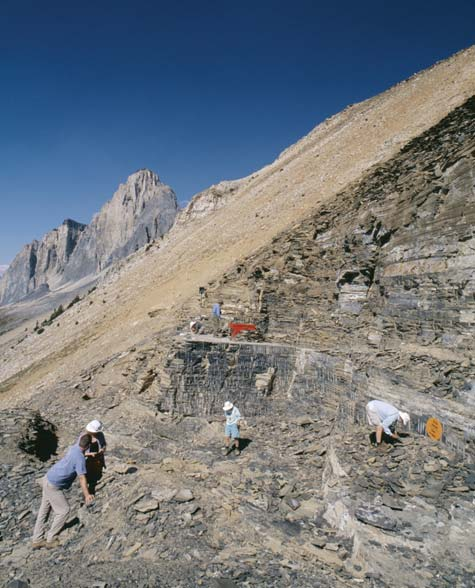
Introducción a la evolución darwiniana 399
- Aunque algunos fósiles contienen trazas de materia orgánica, todo lo que permanece en este fósil de una medusa de 500 millones de años de antigüedad es una impresión en la roca.
Bruce S. Lieberman/University of Kansas
- La madera petrificada del Parque Nacional Bosque Petrificado en Arizona consiste de árboles que quedaron enterrados y fueron infiltrados con minerales. Los troncos quedaron expuestos por erosión de las capas de arcilla en las que estaban enterrados.
Kenneth Murray/Photo Researchers, Inc.
- Fósil de un insecto de 2 millones de años de antigüedad (un mosquito) que quedó incrustado en ámbar.
Alfred Pasieka/Science Photo Library/Photo Researchers, Inc.
- Molde de un fósil de antiguos equinodermos llamados crinoideos formado cuando éstos se descompusieron, lo que dejó un molde que más tarde se llenó con minerales disueltos que se endurecieron.
A. J. Copley/Visuals Unlimited
- Huellas de dinosaurio, cada una de 75 a 90 cm de longitud, proporcionan pistas acerca de la postura, modo de andar y comportamiento de estos animales extintos.
Scott Berner/Visuals Unlimited
FIGURA 18-8 Fósiles desarrollados en diferentes formas
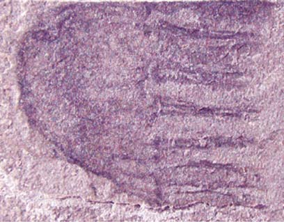
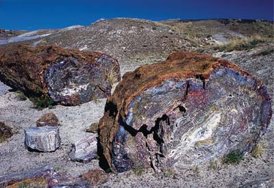
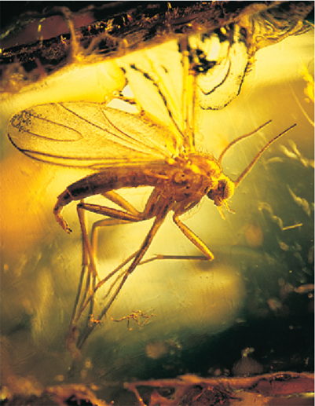
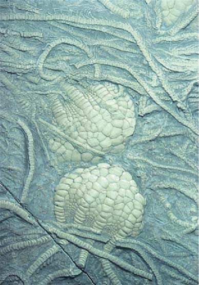
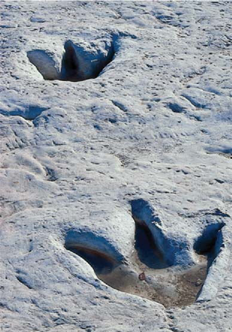
400 Capítulo 18
se solidifi ca en roca volcánica. La roca inicialmente contiene algo de potasio mas no argón. Puesto que el argón es un gas, escapa de la roca caliente tan pronto como se forma, pero cuando el potasio decae en roca que ya está fría y solidifi cada, el argón se acumula en la estructura cristalina de la roca. Si la razón de potasio 40 a argón 40 en la roca puesta a prueba es de 1:1, la roca tiene 1300 millones de años de antigüedad. Para datar fósiles comúnmente se usan varios radioisótopos. Tres de ellos son potasio 40 (vida media: 1300 millones de años), uranio 235 (vida media: 704 millones de años) y carbono 14 (vida media: 5730 años). Los radioisótopos distintos al carbono 14 se usan para datar la roca en la que se encuentran los fósiles, mientras que el carbono 14 se usa para datar los restos de carbono de algo que alguna vez estuvo vivo, como madera, huesos y conchas. Siempre que es posible, la edad de un fósil se verifi ca de manera independiente con el uso de dos o más radioisótopos distintos. El carbono 14, que se produce continuamente en la atmósfera a partir de nitrógeno 14 (mediante radiación cósmica), decae después a nitrógeno 14. Dado que la formación y el decaimiento del carbono 14 ocurre a tasas constantes, la razón de carbono 14 a carbono 12 (un isótopo del carbono más abundante y estable) es constante en la atmósfera. Los organismos absorben carbono de la atmósfera en forma directa (por fotosíntesis) o indirecta (al consumir organismos fotosintéticos). Puesto que cada organismo absorbe carbono de la atmósfera, su razón de carbono 14 a carbono 12 es la misma que hay en la atmósfera. No obstante, cuando un organismo muere, ya no absorbe carbono y la proporción de carbono 14 en sus restos declina conforme el carbono 14 decae a nitrógeno 14. Dada su vida media relativamente corta, el carbono 14 es útil para datar fósiles que tienen 50,000 años de antigüedad o menos. Es particularmente útil para datar sitios arqueológicos.
La distribución de plantas y animales apoyan la evolución
El estudio de la distribución geográfi ca pasada y presente de los organismos se llama biogeografía . La distribución geográfi ca de los organismos afecta su evolución. Darwin estuvo interesado en la biogeografía y consideró por qué las especies que se encuentran en las islas oceánicas
se transformen en átomos diferentes se conoce como su vida media ( FIGURA 18-10 ). Los radioisótopos difi eren de manera signifi cativa en sus vidas medias. Por ejemplo, la vida media del yodo 132 sólo es de 2.4 horas, mientras que la vida media del uranio 235 es de 704 millones de años. La vida media de un radioisótopo particular es constante y no varía con la temperatura, la presión o algún otro factor ambiental. La edad de un fósil en roca sedimentaria por lo general se estima mediante mediciones de las proporciones relativas del radioisótopo original y su producto de decaimiento en intrusiones de roca volcánica que penetran los sedimentos. Por ejemplo, la vida media del potasio 40 es 1300 millones de años, lo que signifi ca que en 1300 millones de años la mitad del potasio radiactivo habrá decaído en su producto de decaimiento, argón 40. El reloj radiactivo comienza a correr cuando el magma
Ambulocetus natans , una forma transicional entre los descendientes de las ballenas modernas y sus ancestros terrestres. No obstante, conservó las extremidades posteriores de sus ancestros cuadrúpedos.
El más reciente Rodhocetus tenía vértebras flexibles que permitían un poderoso movimiento dorsoventral durante el nado.
El Basilosaurus era más aerodinámico y poseía pequeñas extremidades posteriores no funcionales.
Balaenoptera , la moderna ballena azul, contiene vestigios de pelvis y extremidades incrustadas en su cuerpo.
FIGURA 18-9 Intermediarios fósiles en la evolución de la ballena Los biólogos plantean la hipótesis de que los ancestros de las ballenas ten ía n cuatro patas, como se muestra en estas reconstrucciones de intermediarios de ballenas con base en evidencia fósil. Los fósiles indican que el astrágalo en los intermediarios de ballenas coinciden con los encontrados en los hipopótamos, vacas, cerdos y camellos de la actualidad. Las fi guras no están dibujadas a escala. ( a-c : adaptado con permiso de Futuyma, D. J., Science on Trial: The Case for Evolution, fi g. 2, pp. 260-261, Sinauer Associates, Sunderland, MA, 1995).
Proporción de isótopo original restante (%)
0 0
Tiempo en vidas medias 1 2 3 4 5
10
20
30
40
50
60
70
80
90
100
Decaimiento de isótopo original
FIGURA 18-10 Animada Decaimiento de radioisótopos En el tiempo cero, la muestra está compuesta por completo del radioisótopo y el reloj radiactivo comienza a correr. Después de una vida media, sólo permanece 50% del radioisótopo original. Durante cada vida media sucesiva, la mitad del radioisótopo restante se convierte en producto de decaimiento.
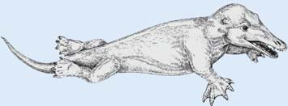
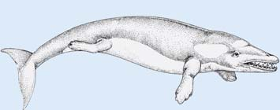
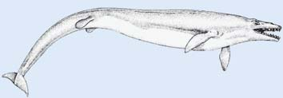
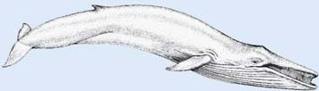
Introducción a la evolución darwiniana 401
continentes estaban unidos en una gran masa de tierra. Durante el curso de millones de años, el continente australiano gradualmente se separó de los demás. Los monotremas y marsupiales en Australia siguieron proliferando y diversifi cándose. El aislamiento de Australia también evitó que los mamíferos placentarios, que surgieron en todas partes tiempo después, compitieran con sus monotremas y marsupiales. En otras áreas del mundo donde los mamíferos placentarios evolucionaron, la mayoría de los monotremas y marsupiales se extinguieron. Considere ahora cómo la geología dinámica de la Tierra afecta la biogeografía y la evolución.
Biogeografía y evolución están relacionadas con la historia geológica de la Tierra
En 1915, el científi co alemán Alfred Wegener, quien observó una correspondencia entre las formas geográfi cas de América del Sur y África, propuso que todas las masas de tierra en una época estuvieron unidas en un enorme supercontinente, que él llamó Pangea ( FIGURA 18-11a ). Además sugirió que Pangea se separó después y que las diversas masas de tierra se separaron en un proceso conocido como deriva continental . Wegener no conocía algún mecanismo que pudiera provocar la deriva continental, de modo que su idea, aunque debatida inicialmente, se ignoró en gran medida. En la década de 1960, evidencia científi ca proporcionó la explicación para la deriva continental. La corteza de la Tierra está compuesta de
tienden a parecerse a las especies del continente más cercano, incluso si el ambiente es diferente. También observó que las especies en las islas oceánicas no tienden a parecerse a las especies en islas con ambientes similares en otras partes del mundo. Darwin estudió las plantas y los animales de dos conjuntos de islas áridas: las islas de Cabo Verde, a casi 640 km de África occidental, y las islas Galápagos, aproximadamente a 960 km al oeste de Ecuador, en América del Sur. En cada grupo de islas, las plantas y animales terrestres eran indígenas (nativos), pero los de las islas Cabo Verde se parecían a las especies africanas y los de las islas Galápagos se parecían a las especies sudamericanas. Las semejanzas de las especies de las Galápagos con las especies sudamericanas eran particularmente sorprendentes si se considera que las islas Galápagos son secas y rocosas, y que la parte más cercana de América del Sur es húmeda y tiene una exuberante selva pluvial. Darwin concluyó que las especies del continente vecino emigraron o fueron transportadas a las islas, donde más tarde se adaptaron al nuevo ambiente y, en el proceso, evolucionaron en nuevas especies. Si la evolución no fuera un factor en la distribución de las especies, uno esperaría encontrar una especie que pudiera sobrevivir en todas partes. Sin embargo, la distribución geográfi ca real de los organismos tiene sentido en el contexto de la evolución. Por ejemplo, Australia, que ha sido una masa de tierra separada durante millones de años, tiene organismos característicos. Australia tiene poblaciones de mamíferos ovíparos (monotremas) y mamíferos con bolsas (marsupiales) que no se encuentran en ninguna otra parte. Hace 200 millones de años, Australia y los otros
Los geólogos plantean la hipótesis de que la separación de Pangea sólo es la más reciente en una serie de separaciones y colisiones continentales que han tenido lugar desde épocas muy tempranas en la historia de la Tierra.
El supercontinente Pangea, hace aproximadamente 240 millones de años (período Triásico).
Los continentes en la actualidad.
La separación de Pangea en Laurasia (hemisferio norte) y Gondwana (hemisferio sur) comenzó aproximadamente hace 180 millones de años. Las masas terrestres se veían de esta forma hace aproximadamente 120 millones de años (período Cretácico).
Mayor separación de masas terrestres, hace 60 millones de años (período Paleógeno temprano). Observe que Europa y América del Norte todavía están unidas y que India era una masa terrestre separada.
Pangea
Laurasia
Gondwana
América del Norte
India
Asia
América del Norte
América del Sur
África
Eurasia
Australia
Antártica
Europa
África
América del Sur
Antártica
Australia
FIGURA 18-11 Animada Deriva continental
PUNTO CLAVE
402 Capítulo 18
(metacarpo y falanges). Esta similitud es particularmente sorprendente porque brazos, patas delanteras, aletas y alas se usan para diferentes tipos de locomoción, y no hay una razón mecánica decisiva para que sean estructuralmente similares. Los arreglos semejantes de las partes de las extremidades anteriores son evidentes en aves, reptiles y anfi bios ancestrales, e incluso en los primeros peces que salieron del agua hacia la tierra hace cientos de millones de años (vea la fi gura 32-17).
siete grandes placas (más algunas más pequeñas) que fl otan en el manto, que es la capa principalmente sólida de la Tierra que yace bajo la corteza y arriba del núcleo. (Debido a su temperatura más caliente, la roca sólida del manto es más plástica que la roca sólida de la corteza sobre ella). Las masas terrestres están situadas en alguna de estas placas. Conforme la placa se mueve, los continentes cambian sus posiciones relativas ( FIGURAS 18-11b, c y d ). El movimiento de las placas de corteza se denomina tectónica de placas . Cualquier área donde se encuentren dos placas es un sitio de intensa actividad geológica. Los terremotos y volcanes son comunes en dichas regiones. Tanto San Francisco, notable por sus terremotos, como el volcán Monte Santa Helena están situados donde se juntan dos placas. Si las masas de tierra se encuentran en los bordes de dos placas adyacentes, pueden formarse montañas. Los Himalaya se formaron cuando la placa que transporta a la India embistió contra la placa que transporta a Asia. Cuando dos placas golpean una contra otra, una de ellas en ocasiones queda enterrada bajo la otra en un proceso conocido como subducción . Cuando dos placas se separan, se forma un surco de lava entre ellas. El océano Atlántico aumenta de tamaño debido a la zona de lava en expansión a lo largo del surco del Atlántico medio, donde se separan dos placas. El conocimiento de que los continentes alguna vez estuvieron conectados y desde entonces se han separado es útil para explicar ciertos aspectos de la biogeografía ( FIGURA 18-12 ). Del mismo modo, la deriva continental tuvo un importante papel en la evolución de diferentes organismos. Cuando Pangea se formó originalmente durante el período Pérmico tardío, juntó a especies terrestres que evolucionaron por separado unas de otras, lo que condujo a competencia y cierta extinción. La vida marina fue afectada de manera adversa, en parte porque, con los continentes unidos como una gran masa, existían menos áreas costeras. (Las áreas costeras poco profundas contienen mayor diversidad de especies marinas que los ambientes de agua profunda). Pangea se separó en varias masas terrestres hace aproximadamente 180 millones de años. Al ocurrir la deriva continental, las poblaciones se aislaron geográfi camente, estuvieron expuestas a diferentes condiciones ambientales y comenzaron a divergir a lo largo de rutas evolutivas separadas. Como resultado, las plantas, animales y otros organismos de continentes antes conectados (América del Sur y África, por ejemplo) se diferenciaron. La deriva continental también provocó cambios graduales en las corrientes oceánicas y atmosféricas que tuvieron profunda infl uencia sobre la biogeografía y la evolución de los organismos. (La biogeografía se estudia un poco más en el capítulo 56).
La anatomía comparada de especies relacionadas demuestra semejanzas en sus estructuras
La comparación de los detalles estructurales de características que se encuentran en organismos diferentes pero relacionados revela una semejanza básica. Los detalles de esas características revelan que se derivan de un ancestro común y se denominan características homólogas ; la condición se conoce como homología . Por ejemplo, considere los huesos de las extremidades de los mamíferos. Un brazo humano, la pata delantera de un gato, la aleta frontal de una ballena y el ala de un murciélago, aunque muy diferentes en apariencia, tienen arreglos de huesos, músculos y nervios sorprendentemente similares. La FIGURA 18-13 muestra una comparación de sus estructuras esqueléticas. Cada una tiene un solo hueso (el húmero) en la parte de la extremidad más cercana al tronco del cuerpo, seguido por los dos huesos (radio y cúbito) del antebrazo, un grupo de huesos (carpo) en la muñeca y un número variable de dedos
El conocimiento de que los continentes estuvieron unidos en alguna época explica la distribución única de ciertas plantas y animales fósiles.
Antártica
India
Australia
África
América del Sur
Mesosaurus
Glossopteris
Lystrosaurus Cynognathus
El Cynognathus era un reptil carnívoro encontrado en rocas del Triásico en América del Sur y África.
El Mesosaurus era un reptil de agua dulce encontrado en rocas del Pérmico en América del Sur y África. (d) Glossopteris era un árbol que producía semillas encontrado en rocas del Pérmico en América del Sur, África, India, Antártica y Australia.
El Lystrosaurus era un reptil herbívoro encontrado en rocas del Triásico en África, India y Antártica.
Adaptado de E. H. Colbert, Wandering Lands and Animals, Hutchinson, London, 1973.
FIGURA 18-12 Distribución de fósiles en continentes que estuvieron unidos durante los períodos Pérmico y Triásico (hace 286 a 213 millones de años)
PUNTO CLAVE
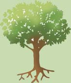
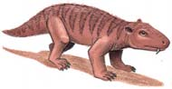
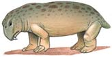
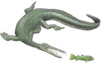
Introducción a la evolución darwiniana 403
Las características estructuralmente similares que no son homólogas pero tienen funciones semejantes que evolucionaron de manera independiente en organismos con parentesco distante se dice que son características homoplásticas . Dichas similitudes en diferentes especies que son adquiridas de manera independiente mediante evolución convergente y no por descendencia común se llaman homoplasia. 2
Las hojas brindan un ejemplo de homología en las plantas. En muchas especies de plantas, las hojas se han modifi cado para funciones distintas a la fotosíntesis. Una espina de cactus y un zarcillo de guisante, aunque muy diferentes en apariencia, son homólogos porque ambos son hojas modifi cadas ( FIGURA 18-14 ). La espina protege el suculento tejido del tallo del cactus, mientras que el zarcillo, que se enreda en un objeto pequeño una vez que tiene contacto con él, ayuda a sostener el tallo en ascenso de la planta de guisante. Tales modifi caciones en órganos usados en diferentes formas son el resultado esperado de un origen evolutivo común. La estructura básica presente en un ancestro común se modifi có en diferentes formas para distintas funciones conforme varios descendientes evolucionaron más tarde. No obstante, no todas las especies con características “similares” descienden de un ancestro común reciente. En ocasiones, condiciones ambientales análogas resultan en la evolución de adaptaciones similares. Dicha evolución independiente de estructuras similares en organismos con relación distante se conoce como evolución convergente . Los cerdos hormigueros, osos hormigueros y pangolines son un excelente ejemplo de evolución convergente ( FIGURA 18-15 ). Se parecen unos a otros en estilo de vida y ciertas características estructurales. Todos tienen garras fuertes y agudas para excavar en hormigueros y termiteros, y morros alargados con largas lenguas pegajosas para capturar dichos insectos. Sin embargo, cerdos hormigueros, osos hormigueros y pangolines evolucionaron a partir de tres órdenes de mamíferos con relación muy distante. (Vea la fi gura 32-28, que muestra varios ejemplos de evolución convergente en mamíferos placentarios y marsupiales).
HUMANO
Húmero
Radio
Cúbito
Carpo
Metacarpo
Falanges
Falanges
1
2 3 4 5
GATO
1
1
2
2 3 4 5
BALLENA
Húmero
Radio
Carpo Radio
Carpo
Metacarpo
Cúbito
Cúbito
1
2
3
4
5
MURCIÉLAGO
3
4
5
FIGURA 18-13 Animada Homología estructural en vertebrados El brazo humano, la pata delantera de un gato, la aleta de una ballena y el ala de un murciélago tienen una similitud estructural subyacente básica porque se derivan de un ancestro común. Los cinco dedos están numerados en cada dibujo.
Espina
Zarcillo
Foliolo
Peciolo
Estípula
Tallo
FIGURA 18-14 Homología en plantas (a) Las espinas de la biznaga de agua ( Ferocactus wislizenii ) son hojas modifi cadas, así como (b) los zarcillos del guisante de jardín ( Pisum sativum ). Las hojas del guisante de jardín son compuestas; esto es: están divididas en componentes más pequeños llamados foliolos. Los foliolos terminales se modifi can en zarcillos que frecuentemente se ramifi can.
2 Un término antiguo, menos preciso, que todavía usan algunos biólogos para referirse a las características no homólogas con funciones similares es analogía .
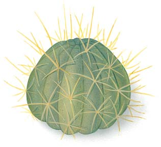
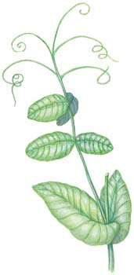
404 Capítulo 18
Las espinas, que son hojas modifi cadas, y las púas, que son tallos modifi cados, son un ejemplo de homoplasia en plantas. Espinas y púas se parecen mutuamente de manera superfi cial pero son características homoplásticas que evolucionaron en forma independiente para resolver la necesidad común de protección de los herbívoros ( FIGURA 18-16 ). Como la homología, la homoplasia ofrece evidencia crucial de la evolución. Las características homoplásticas son de interés evolutivo porque demuestran que los organismos con ascendencias separadas pueden adaptarse en formas parecidas a demandas ambientales similares. La anatomía comparada también revela la existencia de estructuras vestigiales . Muchos organismos contienen órganos o partes de órganos que en apariencia son inoperantes y degenerados, con frecuencia de tamaño reducido o que carecen de alguna parte esencial. Las estructuras vestigiales son restos de estructuras más desarrolladas que estuvieron presentes y fueron funcionales en organismos ancestrales. En el cuerpo humano, más de 100 estructuras se consideran vestigiales, incluido el cóccix (huesos de la cola fusionados), los terceros molares (muelas del juicio) y los músculos que mueven las orejas. Ballenas y pitones tienen huesos vestigiales de extremidades posteriores ( FIGURA 18-17 ); los cerdos tienen dedos vestigiales que no tocan el suelo; las aves sin alas como el kiwi tienen huesos de alas vestigiales; y muchos animales ciegos, de madrigueras o que habitan en cuevas tienen ojos vestigiales inoperantes. Es de esperar la presencia ocasional de una estructura vestigial conforme una especie se adapta a un modo de vida cambiante. Algunas estructuras se vuelven mucho menos importantes para la supervivencia y pueden terminar como vestigios. Cuando una estructura ya no confi ere una ventaja selectiva, puede volverse más pequeña y perder gran parte o el total de su función con el paso del tiempo. Sin embargo, dado que la presencia de la estructura vestigial por lo general no es dañina para el organismo, la presión selectiva para eliminarla por completo es débil y la estructura vestigial se encuentra en muchas generaciones posteriores.
Las comparaciones moleculares entre organismos proporcionan evidencia de la evolución
Fósiles, biogeografía y anatomía comparada proporcionaron a Darwin importantes pistas acerca de la historia evolutiva de la vida. En la actualidad, las semejanzas y diferencias en la bioquímica y biología molecular de varios organismos proporciona convincente evidencia adicional de las relaciones evolutivas. La evidencia molecular de la evolución incluye el código genético universal y las secuencias conservadas de aminoácidos en las proteínas y de nucleótidos en el ADN.
El código genético virtualmente es universal
Los organismos deben sus características a los tipos de proteínas que poseen, que a su vez están determinadas por la secuencia de nucleótidos en su ácido ribonucleico mensajero (ARNm), como lo especifi ca el orden de nucleótidos en su ADN. La evidencia de que toda la vida está relacionada proviene del hecho de que todos los organismos usan un código genético que virtualmente es idéntico. (Existen algunas variaciones menores en el código genético. Por ejemplo, algunas mitocondrias tienen varias desviaciones del código estándar). Recuerde del capítulo 13 que el código genético especifi ca un triplete (una secuencia de tres nucleótidos en el ADN) que codifi ca un codón particular (una secuencia de tres nucleótidos en el ARNm). El codón codifi ca entonces un aminoácido particular en una cadena de polipéptido. Por ejemplo, “AAA” en el ADN codifi ca “UUU” en el ARNm, que a su vez codifi ca el aminoácido fenilalanina en organismos tan diversos como camarones, humanos, bacterias y tulipanes. De hecho, “AAA” codifi ca fenilalanina en todos los organismos examinados hasta el momento.
Por ejemplo, las alas de varios animales voladores con relación distante, como insectos y aves, se parecen superfi cialmente entre ellas; son características homoplásticas que evolucionaron con el paso del tiempo para satisfacer la función común de volar, aunque difi eren en aspectos más fundamentales. Las alas de las aves son extremidades anteriores modifi cadas sostenidas por huesos, mientras que las alas de los insectos quizá evolucionaron a partir de apéndices parecidos a branquias presentes en los ancestros acuáticos de los insectos.
- El cerdo hormiguero ( Orycteropus afer ) es nativo del centro, sur y oriente de África.
Kjell B. Sandved/Visuals Unlimited
- Un oso hormiguero gigante ( Myrmecophaga tridactyla ) en un termitero. El oso hormiguero es nativo de América Latina, desde el sur de México hasta el norte de Argentina.
Gunter Ziesler/Peter Arnold, Inc.
- El pangolín ( Manis crassicaudata ) es nativo de África y del sur al sureste de Asia.
Mandal Ranjit/Photo Researchers, Inc.
FIGURA 18-15 Evolución convergente Tres mamíferos con relación distante adaptados independientemente para comer hormigas y termitas en ambientes de pastizal-bosque similares en diferentes partes del mundo.
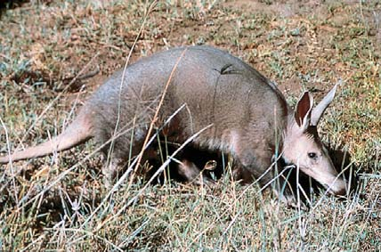
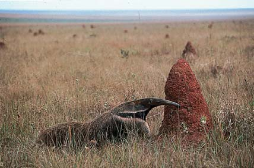
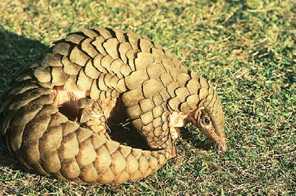
Introducción a la evolución darwiniana 405
comienza a brindar un cúmulo de datos evolutivos conforme se comparan dichos genomas. Las relaciones basadas en las secuencias generalmente concuerda con los primeros estudios, los cuales basaron sus relaciones evolutivas en semejanzas estructurales entre los organismos vivos y en datos de fósiles de organismos extintos. Las investigaciones de la secuencia de aminoácidos en las proteínas que desempeñan el mismo papel en muchas especies han revelado que tienen grandes semejanzas como también ciertas diferencias específi cas. Incluso los organismos que sólo están remotamente relacionados comparten algunas proteínas, como el citocromo c , que es parte de la cadena de transporte de electrones en la respiración aeróbica. Para sobrevivir, todos los organismos aerobios necesitan una proteína respiratoria con la misma estructura y función básicas del citocromo c de su ancestro común. En consecuencia, no todos los aminoácidos que confi eren las características estructurales y funcionales del citocromo c tienen libertad para cambiar. Cualquier mutación que cambiara la secuencia de aminoácidos en sitios estructuralmente importantes de la molécula del citocromo c habría sido dañina, y la selección natural habría evitado que tales mutaciones se transmitieran a generaciones futuras. Sin embargo, en el curso de la larga evolución independiente de diferentes organismos, las mutaciones resultaron en la sustitución de muchos aminoácidos en ubicaciones menos importantes en la molécula de citocromo c . Mientras más grandes sean las diferencias en las secuencias de aminoácidos de sus moléculas de citocromo c , más tiempo ha transcurrido desde que dos especies divergieron. Puesto que las secuencias de aminoácidos de una proteína están codifi cadas en el ADN, las diferencias en las secuencias de aminoácidos refl ejan de manera indirecta la naturaleza y el número de cambios en el par de bases de ADN subyacente que debieron ocurrir durante la evolución. Desde luego, no todo el ADN codifi ca para proteínas (son testigos los intrones y los genes de ARN de transferencia). La secuenciación de ADN (esto es; la determinación del orden de bases de nucleótidos en el ADN, tanto del ADN que codifi ca proteínas como del ADN que no codifi ca proteínas) es útil en la determinación de las relaciones evolutivas. Por lo general, mientras más estrechamente relacionadas se consideren las especies sobre la base de otra evidencia científi ca, mayor será el porcentaje de secuencias de nucleótidos que tengan en común sus moléculas de ADN. Por ejemplo, al usar los datos de secuencia de ADN en la
FIGURA 18-18 es posible concluir que el pariente vivo más cercano de los humanos es el chimpancé (porque su ADN tiene el menor porcentaje de diferencias en la secuencia examinada). (La evolución de los primates se estudia en el capítulo 22). En algunos casos, la evidencia molecular desafía las ideas evolutivas tradicionales que se basaron en comparaciones estructurales entre especies vivientes y/o en estudios de esqueletos fósiles. Considere los mamíferos ungulados con dedos pares como cerdos, camellos, ciervos, antílopes, reses e hipopótamos. Las ballenas carecen de dedos y tradicionalmente no se clasifi caban como parientes cercanos de los mamíferos ungulados.
La universalidad del código genético (no se ha encontrado otro código en ningún organismo) es evidencia convincente de que todos los organismos surgieron a partir de un ancestro común. El código genético se ha mantenido y transmitido a lo largo de todas las ramas del árbol evolutivo desde su origen en algún organismo extremadamente temprano (y exitoso).
Proteínas y ADN contienen un registro del cambio evolutivo
Los investigadores han realizado miles de comparaciones de secuencias de proteínas y ADN en varias especies durante los últimos 30 años. Más aún, el reciente auge en la información de secuencias de ADN (actualmente se tiene secuenciado el genoma de más de 1000 especies)
Cicatriz foliar
Espina (nervadura de hoja)
Púa (se desarrolla a partir de la yema axilar)
Una espina de agracejo japonés ( Berberis thunbergii ) es una hoja modificada. (En este ejemplo, la espina en realidad es la nervadura de la hoja original, de la que se despojó).
Las púas de espino rojo ( Crataegus mollis ) son tallos modificados que se desarrollan a partir de yemas axilares.
Retoño (se desarrolla a partir de la yema axilar)
FIGURA 18-16 Homoplasia en plantas
- Una pitón africana ( Python sebae ). (b) Acercamiento de parte de un esqueleto de pitón que muestra los huesos de las extremidades posteriores.
E. R. Degginger/Animals Animals
J. D. Cunningham/Visuals Unlimited
FIGURA 18-17 Estructuras vestigiales Todas las pitones tienen remanentes de huesos de extremidades posteriores incrustados en sus cuerpos.
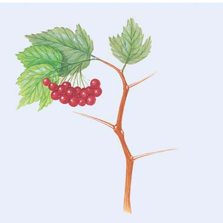
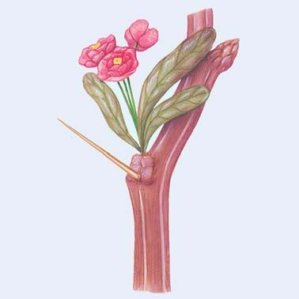
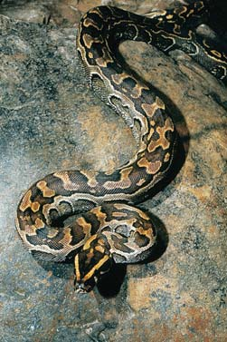
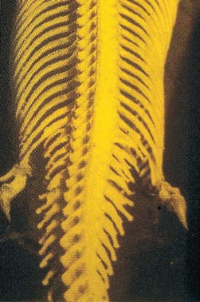
406 Capítulo 18
cies con genes similares. Las mutaciones en los genes que regulan el desarrollo con frecuencia resultan en estructuras dramáticamente diferentes (vea la fi gura 17-12). Cada vez más, la biología del desarrollo, en particular en el ámbito molecular, brinda respuestas a preguntas como: ¿en qué forma las serpientes se estiraron y perdieron sus extremidades? En muchos casos, cambios evolutivos como la pérdida de extremidades en las serpientes ocurren como resultado de variaciones en los genes que regulan la secuencia ordenada de eventos que ocurren durante el desarrollo. En las pitones, por ejemplo, la pérdida de extremidades anteriores y la elongación del cuerpo están ligadas con mutaciones en varios genes Hox que afectan la expresión de los patrones corporales y la formación de extremidades en una gran variedad de animales. (Vea la discusión de los grupos de genes Hox en el capítulo 17). Las extremidades posteriores pueden no desarrollarse porque el tejido embrionario de la pitón no responde a señales internas que disparan la elongación de las patas. Los genetistas del desarrollo en la Escuela de Medicina en Harvard y la Universidad de Princeton estudian las bases de desarrollo para las diferentes formas de pico de los pinzones de Galápagos. Determinaron que un gen que codifi ca una importante molécula de señalización, la proteína morfogenética de hueso 4 (BMP4), afecta el desarrollo del esqueleto craneofacial de las aves. El gen para BMP4 se activa temprano en el desarrollo y tiene un mayor nivel de expresión en las especies de pinzones con picos más largos y más gruesos que en las de pinzones con picos más pequeños. La evidencia científi ca demuestra de manera abrumadora que el desarrollo en diferentes animales está controlado por los mismos tipos de genes; tales semejanzas genéticas en una gran variedad de organismos refl eja una historia evolutiva compartida. Por ejemplo, los vertebrados tienen patrones similares de desarrollo embrionario que indican que comparten un ancestro común. Todos los embriones vertebrados tienen músculos segmentados, sacos faríngeos (garganta), un corazón tubular sin lados izquierdo y derecho, un sistema de arterias conocido como arcos aórticos en la región faríngea y muchas otras características compartidas. Todas estas estructuras son necesarias y funcionales en el pez en desarrollo. Los pequeños músculos segmentados del embrión de pez dan lugar a los músculos segmentados usados por el pez adulto al nadar. Los sacos faríngeos salen a la superfi cie como hendiduras branquiales. El corazón del pez adulto sigue sin dividirse y bombea sangre hacia las branquias que se desarrollan en asociación con los arcos aórticos. Puesto que ninguna de estas características embrionarias persisten en los adultos de reptiles, aves o mamíferos, ¿por qué estas estructuras similares a las de los peces se presentan en sus embriones? La evolución es un proceso conservador y la selección natural construye sobre lo que ya existe en vez de comenzar desde cero. La evolución de nuevas características con frecuencia no requiere la evolución de nuevos genes de desarrollo, más bien depende de una modifi cación en los genes del desarrollo que ya existen (vea la discusión acerca de las preadaptaciones en el capítulo 20). Se cree que los vertebrados terrestres evolucionaron a partir de ancestros con forma de pez; por tanto, comparten algunas de las primeras etapas de desarrollo que todavía se encuentran en los peces
La FIGURA 18-19 muestra un cladograma , o árbol fi logenético , con base en datos moleculares de ballenas y mamíferos ungulados seleccionados. Dichos cladogramas, diagramas que muestran líneas de descendencia, pueden obtenerse a partir de diferencias en una secuencia dada de nucleótidos de ADN. Este diagrama indica que las ballenas están más estrechamente relacionadas con los hipopótamos que con cualquier otro mamífero ungulado. Es probable que las ramas que representan ballenas e hipopótamos divergieran en un momento relativamente reciente debido a la cercana similitud de secuencias de ADN en dichas especies. En contraste, los camellos, que tienen secuencias de ADN que son menos similares a las de las ballenas, divergieron mucho más temprano. La evidencia molecular indica que ballenas e hipopótamos comparten un ancestro común reciente. La evidencia molecular que vincula ballenas y mamíferos ungulados con dedos pares condujo a una revaloración de las ballenas fósiles tempranas. Al igual que los mamíferos ungulados de hoy, los fósiles tempranos de ballenas tenían un número par de dedos en sus apéndices. Las ballenas fósiles también tienen el mismo tipo de astrágalo especializado (llamado polea doble) que los hipopótamos y otros mamíferos ungulados.
La biología del desarrollo ayuda a revelar patrones evolutivos
Ya en 1975 los biólogos sugerían que los cambios reguladores en la expresión génica, en particular de los genes involucrados en el desarrollo, eran responsables de muchas diferencias entre especies cercanamente relacionadas. En la actualidad mucha evidencia apoya la idea de que los cambios reguladores (la manera en que los genes se activan o desactivan durante el desarrollo) ayuda a explicar la diversidad de formas en espe-
Chimpancé
Gorila
Orangután
Gibón
Mono Rhesus
Mono araña
Tarsero
5 10 15
Porcentaje de divergencia en secuencia no codificadora del gen β -globina
20
Especies de primates comparadas con humanos
25
FIGURA 18-18 Diferencias en secuencias de nucleótidos de ADN como evidencia de relaciones evolutivas La comparación del mismo gen en diferentes organismos brinda una ventana a la evolución. Aquí las diferencias en la región no codifi cadora del gen b -globina se comparan entre humanos y otros primates. Los biólogos evolutivos comienzan a expandir dichos estudios de comparar uno o varios genes, a comparar genomas enteros.
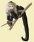
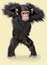
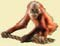
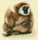
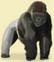
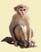
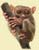
Introducción a la evolución darwiniana 407
depredadores que se alimentan de los guppies más grandes están presentes en todas las corrientes a elevaciones más bajas; tales áreas de intensa presión depredadora se conocen como hábitats de alta depredación . Los depredadores con frecuencia son excluidos de los tributarios o áreas corriente arriba por rápidos y cascadas. Las áreas arriba de tales barreras se conocen como hábitats de baja depredación porque sólo contienen una especie de pequeño pez depredador que ocasionalmente se alimenta de guppies más pequeños. Las diferencias en depredación están correlacionadas con muchas diferencias en los guppies, como la coloración del macho, el comportamiento y atributos conocidos como rasgos de historia de vida (que se estudian con más detalle en el capítulo 53). Dichos rasgos incluyen edad y tamaño al momento de la maduración sexual, el número de descendientes por evento reproductivo, el tamaño de los descendientes y la frecuencia de la reproducción. Por ejemplo, los adultos guppies son más grandes en las corrientes que se encuentran a mayores elevaciones mientras que los más pequeños están en corrientes a elevaciones más bajas. ¿Realmente los depredadores provocan la evolución de estas diferencias? Reznick y sus colegas pusieron a prueba esta hipótesis evolutiva al realizar experimentos de campo en Trinidad. Al sacar ventaja de las cascadas que evitan el movimiento corriente arriba de los guppies, de sus depredadores o de ambos, movieron guppies o depredadores de éstos sobre tales barreras. Por ejemplo, los guppies de un hábitat de alta depredación se introdujeron en un hábitat de baja depredación al moverlos superando una cascada hacia una sección de la corriente que estaba libre de guppies y grandes depredadores. La única especie de pez que vivía en esta sección de corriente antes de la introducción era el pez depredador pequeño. Once años después, los investigadores capturaron hembras adultas del sitio de introducción (hábitat de baja depredación) y del sitio de control abajo de la cascada (hábitat de alta depredación). Criaron a dichas hem-
actuales. La acumulación de cambios genéticos al paso del tiempo en dichos vertebrados modifi có la estructura corporal básica que se encuentra en el desarrollo de los peces ( FIGURA 18-20 ).
Las hipótesis evolutivas se ponen a prueba experimentalmente
Cada vez más, los biólogos diseñan experimentos imaginativos, con frecuencia en escenarios naturales, para poner a prueba hipótesis evolutivas. David Reznick, de la Universidad de California en Santa Bárbara, y John Endler, de la James Cook University en Australia, estudian evolución en poblaciones de guppies en Venezuela y Trinidad, una pequeña isla en el sur del Caribe. Reznick y Endler observaron que diferentes corrientes tienen distintos tipos y número de peces que depredan a los guppies. Los peces
Este diagrama de ramifi cación, llamado cladograma , muestra relaciones evolutivas hipotéticas. Los organismos que se presentan aquí comparten un ancestro común.
Camello
Cerdo
Rumiante
Hipopótamo
Cetáceo
Ancestro común de mamíferos ungulados con dedos pares y cetáceos
Ancestro común de hipopótamos y ballenas
Adaptado de Nikaido, M., et al., “Phylogenetic Relationships among Cetartiodactyls Based on Insertions of Short and Long Interspersed Elements: Hippopotamuses Are the Closest Extant Relatives of Whales”, Proceedings of the National Academy of Sciences, Vol. 96, 31 de agosto de 1999.
FIGURA 18-19 Cladograma de ballenas y sus parientes vivos más cercanos Las diferencias en secuencias de ADN entre mamíferos seleccionados sugiere que los mamíferos ungulados, como los hipopótamos y las jirafas, son los parientes vivos más cercanos de las ballenas. El hipopótamo probablemente es el pariente vivo más cercano de las ballenas y otros cetáceos. Los nodos ( círculos ) representan puntos de ramifi cación donde una especie se divide en dos o más linajes. (Los rumiantes son mamíferos como las vacas, ovejas y jirafas que tienen un estómago de múltiples cámaras y mastican material vegetal regurgitado para hacerlo más digerible).
PUNTO CLAVE
1 día
3 días 12 días 56 días
3 días 32 días
Humano Pollo Pez
FIGURA 18-20 Desarrollo de aletas de pez, alas de pollo y extremidades humanas Peces, pollos y humanos son vertebrados con genes sorprendentemente similares. Aunque los embriones tempranos de estos organismos son muy parecidos, las áreas en color naranja siguen diferentes rutas de desarrollo, lo que resulta en aletas, alas o extremidades. (Las fi guras no están a escala).
John Burgoyne/National Geographic Image Collection
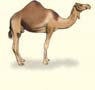
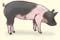
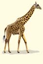
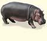
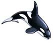
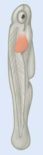
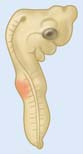
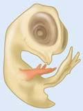
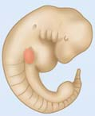
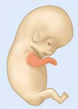
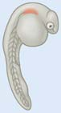
408 Capítulo 18
bras en sus laboratorios y compararon los rasgos de historia de vida de generaciones sucesivas. Los descendientes de los guppies introducidos en el hábitat de baja depredación maduraron a un mayor tamaño que los descendientes de los guppies en el sitio de control abajo de la cascada ( FIGU -
RA 18-21 ). También produjeron menos descendientes, aunque más grandes. Las poblaciones de peces introducidos evolucionaron para tener historias de vida similares a las de los peces que se suelen encontrar en los hábi tats de baja depredación. Estudios similares demostraron que los depredadores han tenido un papel activo en la evolución de otros rasgos, como el número promedio de descendientes producidos durante la vida de una hembra individual (fecundidad), la coloración del macho y el comportamiento. La evolución rápida en una escala de años también se ha observado en organismos tan diversos como caracoles marinos, mejillones, gusanos del jaboncillo, efímeras, lagartos anole, ’i’iwis (mieleros escarlata) y conejos silvestres. Estos y otros experimentos y observaciones demuestran no sólo que la evolución es real, sino que también ocurre ahora, impulsada por fuerzas ambientales selectivas, como la depredación, que puede manipularse experimentalmente. Darwin supuso de manera incorrecta que la evolución era tan gradual que los humanos no podían observarla. Como apunta Jonathan
18.1 (página 392)
1 Defi nir evolución .
■ Evolución es la acumulación de cambios heredados dentro de una población a lo largo del tiempo. Evolución es el concepto unifi cador de la biología, porque vincula todos los campos de las ciencias de la vida en un cuerpo coherente de conocimiento.
18.2 (página 392)
2 Discutir el desarrollo histórico de la teoría evolutiva.
■ Jean Baptiste de Lamarck fue el primer científi co en proponer que los organismos experimentan cambio con el correr del tiempo como resultado de algún fenómeno natural y no por intervención divina. Lamarck pensó que los organismos estaban dotados con una fuerza vital que los impulsaba a cambiar hacia mayor complejidad con el tiempo. Consideró que los organismos podían transmitir a sus descendientes caracteres adquiridos durante sus vidas.
■ Las observaciones de Charles Darwin mientras viajó en el HMS Beagle fueron la base para su teoría evolutiva. Darwin trató de explicar las semejanzas entre animales y plantas de las áridas islas Galápagos y el húmedo continente sudamericano.
■ Darwin estuvo infl uido por la selección artifi cial , en la que los criadores desarrollan muchas variedades de plantas y animales domesticados sólo en pocas generaciones. Darwin aplicó a las poblaciones naturales las ideas de Thomas Malthus acerca del aumento natural en poblaciones humanas. Darwin estuvo infl uido por la idea de que la Tierra era extremadamente antigua, una idea promovida por Charles Lyell y otros geólogos.
18.3 (página 393)
3 Explicar las cuatro premisas de la evolución mediante selección natural propuestas por Charles Darwin.
■ Charles Darwin y Alfred Wallace propusieron de manera independiente la evolución mediante selección natural , que se basa en cuatro observaciones. Primero: la variación genética existe entre los individuos en una población. Segundo: la capacidad reproductiva de cada especie hace que sus poblaciones tengan el potencial de aumentar geométricamente en número con el transcurso del tiempo. Tercero: los organismos compiten unos con otros por los recursos necesarios para la vida, como alimento, espacio vital, agua y luz. Cuarto: los descendientes con la combinación más favorable de características heredadas tienen más probabilidad de sobrevivir y reproducirse, y transmiten dichas características genéticas a la siguiente generación.
■ La selección natural resulta en adaptaciones , modifi caciones evolutivas que mejoran las posibilidades de supervivencia y éxito reproductivo en un ambiente particular. Con el tiempo, pueden acumularse sufi cientes cambios en poblaciones geográfi camente separadas para producir nuevas especies.
Aprenda más acerca de las islas Galápagos y los pinzones de estas islas haciendo clic sobre las fi guras en CengageNOW.
4 Comparar la síntesis moderna con la teoría evolutiva original de Darwin.
■ La síntesis moderna combina la teoría evolutiva mediante selección natural de Darwin con la genética moderna para explicar por qué varían los individuos en una población y cómo las especies se adaptan a su ambiente.
■ La mutación brinda la variabilidad genética sobre la que actúa la selección natural durante la evolución.
18.4 (página 397)
5 Resumir la evidencia de la evolución obtenida a partir del registro fósil.
■ La evidencia directa de la evolución proviene de los fósiles , los restos o trazas de organismos antiguos. Las capas de roca sedimentaria por lo general se presentan en su secuencia de deposición, con las capas más recientes encima de las más antiguas. Los fósiles índice caracterizan una capa específi ca a lo largo de grandes áreas geográfi cas. Los radioisótopos presentes en una roca ofrecen una forma de medir con precisión la edad de la roca.
Aprenda más acerca de los intermediarios fósiles haciendo clic sobre la fi gura en CengageNOW.
6 Defi nir biogeografía y describir cómo la distribución de los organismos da apoyo a la evolución.
■ La biogeografía , la distribución geográfi ca de los organismos, afecta su evolución. Las áreas que han estado separadas del resto del mundo durante mucho tiempo contienen organismos que evolucionaron en aislamiento y por tanto son únicos para dichas áreas.
■ En una época los continentes estaban unidos y formaban un supercontinente. La deriva continental , la cual hizo que las diversas masas de tierra se rompieran y separaran, tuvo un importante papel en la evolución.
Observe la deriva continental haciendo clic en la fi gura en CengageNOW.
■ ■ RESUMEN: ENFOQUE EN LOS OBJETIVOS DE APRENDIZAJE
Weiner, autor de Th e Beak of the Finch: A Story of Evolution in Our Time (El pico de los pinzones: una historia de evolución en nuestra época): “Darwin no conocía la fuerza de su teoría. Subestimó enormemente el poder de la selección natural. Su acción no es ni rara ni lenta. Conduce a evolución todos los días y todas las horas, en todo el entorno, y uno puede observarla”.
Repaso
■ ¿Cómo datan fósiles los científi cos?
■ ¿Cómo puede explicar que los fósiles de Mesosaurus , un reptil extinto que no podía nadar en mar abierto, se encuentren en las partes sureñas tanto de África como de América del Sur?
■ ¿En qué forma las características homólogas y homoplásticas ofrecen evidencia de la evolución?
■ ¿De qué manera la biología del desarrollo proporciona evidencia de una ascendencia común para vertebrados tan diversos como reptiles, aves, cerdos y humanos?
■ ¿Cómo favorecen las preferencias de los depredadores la evolución de tamaño en los guppies?
Introducción a la evolución darwiniana 409
■ Las estructuras vestigiales son restos no funcionales o degenerados de estructuras que estuvieron presentes y eran funcionales en organismos ancestrales. Las estructuras ocasionalmente se convierten en vestigiales conforme las especies se adaptan a diferentes modos de vida.
Aprenda más acerca de las estructuras vestigiales haciendo clic sobre la fi gura en CengageNOW.
8 Explicar brevemente cómo la biología molecular y la biología del desarrollo brindan comprensión del proceso evolutivo.
■ La evidencia molecular para la evolución incluye el código genético universal y las secuencias conservadas de aminoácidos en proteínas y de nucleótidos en ADN.
■ Los cambios evolutivos con frecuencia son resultado de mutaciones en genes que afectan la secuencia ordenada de eventos durante el desarrollo. El desarrollo en diferentes animales está controlado por el mismo tipo de genes, lo que indica que dichos animales tienen una historia evolutiva compartida.
■ La acumulación de cambios genéticos desde que los organismos divergieron, o tomaron rutas evolutivas separadas, modifi có el patrón de desarrollo en los embriones de vertebrados más complejos. 9 Proporcionar un ejemplo de cómo se ponen a prueba experimentalmente las hipótesis evolutivas.
■ Reznick y Endler estudiaron los efectos de la intensidad de depredación sobre la evolución de poblaciones de guppies en el laboratorio y en la naturaleza. Dichos experimentos son una poderosa herramienta para que los investigadores pongan a prueba los procesos subyacentes de la selección natural.
7 Describir la evidencia de la evolución obtenida a partir de la anatomía comparada.
■ Las características homólogas tienen semejanzas estructurales básicas, aun cuando las estructuras puedan usarse en diferentes formas porque las características homólogas se derivan de la misma estructura en un ancestro común. Entre los organismos que tienen características homólogas existen afi nidades evolutivas.
■ Las características homoplásticas evolucionaron independientemente para tener funciones similares en organismos con relaciones distantes. Las características homoplásticas demuestran evolución convergente , en la que los organismos con ascendientes separados se adaptaron en formas similares ante demandas ambientales semejantes.
¿En cuál de los siguientes conceptos se basa la evolución? (a) los organismos comparten un origen común (b) con el tiempo, los organismos divergieron de un ancestro común (c) las partes corporales de un animal pueden cambiar a lo largo de su vida y dichos cambios adquiridos se transmiten a la siguiente generación (d) a y b (e) a, b y c
La evolución es la acumulación de cambios genéticos dentro de _____________ a lo largo del tiempo. (a) los individuos (b) las poblaciones (c) las comunidades (d) a y b (e) a y c
Charles Darwin propuso que la evolución podía explicarse mediante el éxito reproductivo diferencial de los organismos resultado de su variación que ocurre de manera natural. Darwin llamó a este proceso (a) coevolución (b) evolución convergente (c) selección natural (d) selección artifi cial (e) homoplasia
¿Cuál de los siguientes no es parte del mecanismo de evolución de Darwin? (a) éxito reproductivo diferencial (b) variación en una población (c) herencia de caracteres adquiridos (no genéticos) (d) sobreproducción de descendientes (e) lucha por la existencia
La síntesis moderna (a) se basa en la secuencia de fósiles en las capas de rocas (b) usa la genética para explicar la fuente de variación hereditaria que es esencial para la selección natural (c) la propusieron por primera vez los antiguos pensadores griegos (d) considera la infl uencia de la distribución geográfi ca de los organismos sobre su evolución (e) es reforzada por homologías que se explican mediante ascendencia común
La evolución del tamaño del pico en las diversas especies de pinzones de las Galápagos se asocia con sus (a) cantos (b) dietas (c) tamaños corporales (d) depredadores (e) ninguno de los anteriores
El registro fósil (a) por lo general ocurre en roca sedimentaria (b) en ocasiones parece fragmentaria (c) es relativamente completo para organismos de la selva pluvial pero incompleto para organismos acuáticos (d) a y b (e) a, b y c
En la ___________, el agente de selección es el ambiente, mientras que en la ___________, el agente de selección son los humanos. (a) selección natural; evolución convergente (b) mutación; selección artifi cial (c) homoplasia; homología (d) selección artifi cial; selección natural (e) selección natural; selección artifi cial
Los cerdos hormigueros, osos hormigueros y pangolines están relacionados sólo de manera distante, pero son similares en estructura y forma como resultado de (a) homología (b) evolución convergente (c) biogeografía (d) estructuras vestigiales (e) selección artifi cial
Las especies de las islas Galápagos (a) son similares a las de otras islas en la misma latitud (b) son similares a las de tierra fi rme en América del Sur (c) son idénticas a las de otras islas en la misma latitud (d) son idénticas a las de tierra fi rme en América del Sur (e) son similares a las que hay tanto en tierra fi rme de África como de América del Sur
Los cambios en sólo algunos genes que regulan ____________ con frecuencia son responsables de la evolución de nuevas características anatómicas en una población. (a) la formación de fósiles (b) las estructuras vestigiales (c) el desarrollo (d) la biogeografía (e) la adaptación
EVALÚE SU COMPRENSIÓN
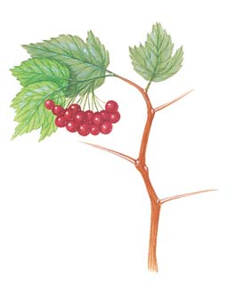
410 Capítulo 18
VÍNCULO CON LA EVOLUCIÓN. El uso de organismos modelo, como el ratón, para la investigación y las pruebas biomédicas de las enfermedades humanas se basa en la suposición de que todos los organismos comparten un ancestro común. ¿En qué evidencia se basa esta suposición?
VÍNCULO CON LA EVOLUCIÓN. ¿Qué adaptaciones deben poseer los animales para nadar en el océano? ¿Por qué organismos tan genéticamente diferentes como las marsopas, que son mamíferos, y los tiburones, que son peces, son tan similares en forma?
VÍNCULO CON LA EVOLUCIÓN. El feto humano produce un recubrimiento de pelo fi no (el lanugo) que pierde antes o poco después del nacimiento. Los fetos de chimpancés y otros primates también producen recubrimientos de pelo, pero ellos no lo pierden. Explique estas observaciones con base en lo que aprendió en este capítulo.
VÍNCULO CON LA EVOLUCIÓN. Charles Darwin dijo alguna vez: “No es la más fuerte de las especies la que sobrevive, ni la más inteligente, sino la que responde mejor al cambio”. Explique qué trató de decir.
VÍNCULO CON LA EVOLUCIÓN. Escriba breves párrafos en los que explique cada uno de los siguientes enunciados: a. La selección natural elige entre los individuos de una población a aquellos más adaptados a las condiciones ambientales actuales . Ello no garantiza la supervivencia en condiciones futuras. b. Los individuos no evolucionan, sino las poblaciones. c. Los organismos que existen en la actualidad lo hacen porque sus ancestros tuvieron caracteres que permitieron que ellos y sus descendientes proliferaran. d. En el ámbito molecular la evolución puede tener lugar mediante el reemplazo de un nucleótido por otro. e. Se dice que la evolución ha ocurrido dentro de una población cuando se detectan cambios genéticos mesurables.
VÍNCULO CON LA EVOLUCIÓN. Aunque la mayoría de las salamandras tienen cuatro patas, algunas especies que viven en aguas poco profundas carecen de extremidades posteriores y tienen extre-
PENSAMIENTO CRÍTICO
La sirena listada ( Pseudobranchus striatus axanthus ) es una salamandra acuática que se asemeja a una anguila. Es nativa de Florida.
Suzanne L. Collins y Joseph T. Collins/Photo Researchers, Inc.
midades anteriores extremadamente pequeñas ( vea la fotografía ). Desarrolle una hipótesis para explicar cómo se originaron las salamandras sin extremidades de acuerdo con el mecanismo de evolución mediante selección natural propuesto por Darwin. ¿Cómo podría poner a prueba su hipótesis?
ANÁLISIS DE DATOS. ¿Cuál de los primates en la fi gura 18-18 es el pariente más distante de los humanos? Explique su respuesta.
CIENCIA, TECNOLOGÍA Y SOCIEDAD. Los granjeros enfrentan con frecuencia un predicamento, conocido como ciclo infi nito de los pesticidas, en el que el costo de emplear pesticidas aumenta porque éstos tienen que aplicarse con más frecuencia o en dosis mayores a medida que su efectividad disminuye. Relacionado a lo aprendido en este capítulo, ofrezca una explicación de por qué los pesticidas pierden su efectividad.
Preguntas adicionales están disponibles en CengageNOW en www.cengage.com/login.